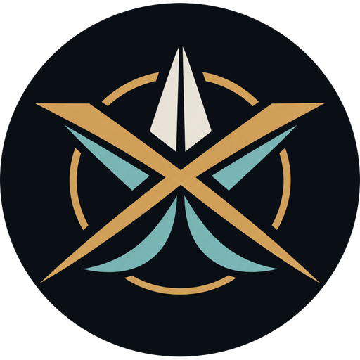

Vyoma · Jala · Bhoomi
Tripura-X
A vehicle that flies, floats on a hydrofoil and drives on roads, inspired by the Tripura Vimana and planned with today’s technology.
Fly
Surf
Drive
Concept and prototype plan by Arnav Rajpurohit · October 2026

The idea
One platform, three modes
01
Fly
Eight electric rotors on four folding arms lift one pilot on short hops of about 7 to 10 minutes. The wheels and the sealed hull double as landing gear and float.
02
Surf
A retractable hydrofoil lifts the hull out of the water, so it skims on roughly 4 to 8 kW. It is an eFoil, scaled up.
03
Drive
Three hub-motor wheels and folding rotor arms for low-speed roads, up to about 40 km/h (25 mph).
Design rule: short hops in the air, long range on water and road. Battery energy decides everything.
Inspiration
From Vaimanika Shastra to engineering
| What the text describes | What we build |
|---|---|
| Tripura Vimana: a three-fold craft said to move on land, water and sky | Three tiers on one hull: Jala (hull and foil), Bhoomi (cabin and wheels), Akasha (lift collar and rotors) |
| Different vimana types for different purposes | Swappable mission modules for passenger, cargo and rescue use |
| Strict discipline expected of the pilot | Checklists, flight envelope limits and a trained test pilot |
Honest note: a 1974 IISc study found the text’s own designs aerodynamically unworkable. We borrow the idea of a three-element craft, not its specifications.
Reality check
Batteries set the limits today
250
Wh/kg today
Typical aviation-grade lithium-ion cell energy density. Packs reach about 180 to 200.
500
Wh/kg demonstrated
Cell-level lab and pilot results exist. Scale is expected around 2028 to 2030.
64%
Lost to reserve
In a NASA study, the 20-minute reserve took 64% of onboard energy.
So Tripura-X is a short-hop machine: 7 to 10 minutes in the air, and an hour or more on water and road.
Sources: PwC Strategy&, eVTOL battery outlook; NASA Lift+Cruise study, Vertical Flight Society Forum 2026
Architecture
Anatomy of Tripura-X
1
2
3
4
5
1
Eight rotors
Four folding arms, two coaxial three-blade rotors each on one mast. 1.0 m discs.
2
Hull and single-seat cabin
Carbon and foam monocoque under a glass canopy. Floats when parked.
3
Battery pack
About 14 kWh, low and central, shared by all three modes.
4
Retractable wheels
Three wheels on struts. Hub motors on the road, landing gear in the air.
5
Retractable hydrofoil
Strut, 1,550 cm² front wing and an electric pod.
Three tiers: Akasha (lift collar and rotors), Bhoomi (cabin and wheels), Jala (hull and foil). Gear shown deployed; in flight the wheels and foil retract.
Mode 1 · Air
Eight rotors, one pilot
| Item | Target (engineering estimate) |
|---|---|
| Gross mass | About 318 kg: 228 kg vehicle plus a 90 kg pilot |
| Rotors | 8 rotors of 1.0 m in 4 coaxial pairs, about 500 N/m² per rotor and 1,000 N/m² per pair |
| Hover power | About 95 kW electrical, near 100 kW at lift-off |
| Battery | 14 kWh at 200 Wh/kg pack level, about 70 kg, 80% usable, peak draw near 7C |
| Flight time | About 7 minutes of hover, 9 to 11 minutes with forward flight, no reserve |
| Failure goal | Controlled landing after the loss of any one motor |
Method: momentum theory, ideal power = T^1.5 / √(2ρA) with T = 3,120 N and A = 6.28 m², plus a 20% coaxial-pair penalty, 65% rotor efficiency and 85% motor-and-controller efficiency.
Modes 2 and 3 · Water and road
Proven technology, scaled up
Water: hydrofoil
- A 1,550 cm² front wing lifts 318 kg at about 7 m/s.
- Foil-borne cruise near 9 m/s draws about 4 to 5 kW. Plan for 8 kW.
- Production eFoils already use 5 kW motors for up to two hours.
Road: low-speed trike
- Two hub motors of about 3 kW each.
- Top speed of about 40 km/h (25 mph). Three wheels mean a motorcycle or autocycle class in most countries, not a four-wheel low-speed car.
- Rotor arms fold so the vehicle stays narrow.
Sources: Waveshark E-Foil 2 Sport specifications; CNN report on Alef Model A
Mode switching
Drive, float, foil, fly
01
Drive
Road mode at up to about 40 km/h to a ramp or beach. Rotor arms stay folded.
02
Float
The hull enters the water and the wheels retract into the hull.
03
Foil
The foil strut drops, the pod accelerates and the hull rises clear at about 7 m/s.
04
Fly
Take off from a ramp or pad after the pre-flight check. Arms unfold, foil and wheels retract.
The flight computer allows a mode change only at a safe speed and after sensor checks.
Weight budget
Where the 318 kg goes
| Item | Mass (kg) |
|---|---|
| Hull and structure | 45 |
| 8 motors, props, controllers, arms | 41 |
| Battery, 14 kWh | 70 |
| Wheels, hub motors, retraction | 22 |
| Foil, strut, pod, retraction | 18 |
| Avionics, wiring, cooling | 12 |
| Ballistic parachute | 12 |
| Seat, controls, other | 8 |
228 kg
Vehicle empty mass
90 kg
Pilot
318 kg
Gross mass
Safety
Built to fail safely
Ballistic parachute
Rated for 318 kg, 12 kg budgeted. It needs tens of metres of height to open.
Battery safety
Cell monitoring, thermal barriers and a sealed, isolated pack.
Redundancy
Eight motors, two flight computers and two power buses.
Water cut-off
A dead-man switch stops the drive if the pilot falls, as on eFoils.
Road guards
Folded arms and guarded rotors while driving near people.
Test ladder
Thrust stand, tether, sandbag, then a trained test pilot.
Build roadmap
Three phases, one risk at a time
Phase 1 · 0 to 3 months
Subsystem rigs
A 5 kg unmanned quad with floats and wheels, plus an RC foil boat. Prove each mode alone.
US$2.5k to 5k
Phase 2 · 3 to 12 months
Integrated demonstrator
One unmanned hull that drives, floats, foils and flies. Check weight-class rules first.
US$25k to 60k
Phase 3 · 12 to 36 months
Single-seat prototype
A manned craft flown by a trained test pilot under the aviation authority’s experimental rules.
US$300k to 1M+
Cost ranges are rough planning estimates, not quotes.
Start this week
Phase 1 parts list
| Part | Cost (US$) |
|---|---|
| Quad or hex frame, motors, controllers and props for about 5 kg | 600 to 900 |
| Pixhawk-class flight controller with ArduPilot, GPS, telemetry | 300 to 500 |
| Two battery packs and a charger | 300 to 500 |
| Floats and fold-out wheels, printed or cut from foam | 100 to 250 |
| RC hydrofoil test boat with a brushless pod | 400 to 800 |
| Radio, camera and sensors | 300 to 500 |
| Tools, test stand and safety gear | 300 to 600 |
| Total, rough estimate | 2,300 to 4,050 |
Prices are rough planning estimates and vary by country and supplier.
Rules and risks
What can stop the project
Rules to check
- Drone rules by weight class. In India a 5 kg drone is “Small” (2 to 25 kg) under the Drone Rules, 2021: register it and hold a remote pilot certificate.
- Manned flight needs special authority. Alef’s Model A earned an FAA special airworthiness certificate limited to exhibition and R&D.
- Road use: three wheels mean a motorcycle or autocycle class. Plan type approval (ARAI in India) or private-land testing.
- Boating registration and life jackets on water.
Top technical risks
- Battery energy and a 7C peak draw cap flight time near 7 to 10 minutes.
- Weight creep from carrying three sets of hardware.
- Foil stability during the lift-off hump.
- Spray and water ingestion when flying from water.
Source: CNN report on Alef Automotive’s Model A certification
Next steps
Start small, fly safe
1
Order the Phase 1 parts and build the 5 kg rig.
2
Measure thrust and foil lift, then replace each estimate with data.
3
Find a drone club, a naval architect and a test pilot as partners.
Tripura-X · Sky, road and water · Concept and prototype plan by Arnav Rajpurohit